Rafael Almeida
Engenheiro Mecatrônico | Desenvolvedor de Projetos de Automação Industrial e Residencial

Quem sou eu?
Um pouco de minha histórica...
Possui graduação em engenharia mecatrônica (2013) e mestrado em engenharia elétrica (2015) pela Universidade de Brasília (UnB). Atualmente doutorando na área de sistemas aeroespaciais e mecatrônica, no Instituto Tecnológico de Aeronáutica (ITA). Desde 2014 trabalha como engenheiro tecnologista em mecatrônica no Instituto Tecnológico de Aeronáutica (ITA/DCTA). Desenvolve pesquisas relacionadas a (i) modelagem e simulação de sistemas aplicadas ao desenvolvimento de sistemas mecatrônicos, e (ii) automação de sistemas industriais, com ênfase em processamento digital de sinais, robótica industrial e aplicações de inteligência computacional.